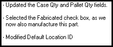

After changing the revision number of a part record and clicking the Save button, the Revision ID change Comments dialog box appears.
After modifying the part record as necessary, click the Config Mgt tab and enter a new revision for the part into the Revision ID field.
Click the Save button or select Save from the File menu.
The Revision ID Change Comments dialog box appears.
Enter text for the revision into the field and click the Ok button. For example:

The comments are saved to the Revision ID.
For more information on viewing archived comments, click here.